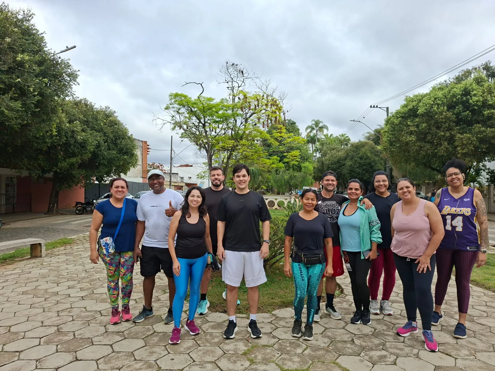
Passos de Resiliência
Caminhadas e corridas que incentivam atividade regular, condicionamento físico, saúde emocional e superação gradual.
Consultar inscrições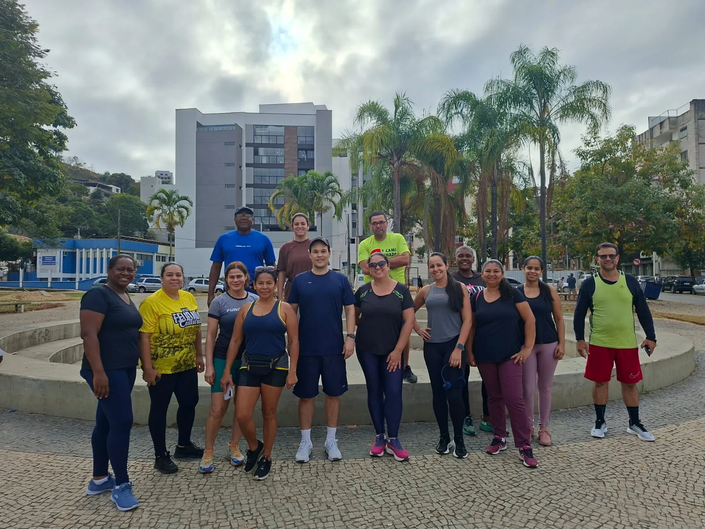
Catálogo de atividades
Encontre ações para adolescentes, adultos, pessoas idosas, estudantes e servidores. Todas integram saúde, convivência e aprendizagem.
Conheça as atividades
As vagas, horários e locais podem mudar a cada edição. Por isso, os cards direcionam para o canal oficial, onde estão as informações mais recentes.
Em andamento
Iniciativas apresentadas como disponíveis ou em execução no momento.

Caminhadas e corridas que incentivam atividade regular, condicionamento físico, saúde emocional e superação gradual.
Consultar inscrições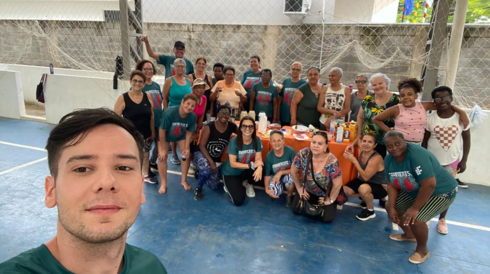
Exercícios físicos e cognitivos para autonomia, equilíbrio, força, mobilidade, socialização e qualidade de vida.
Consultar inscrições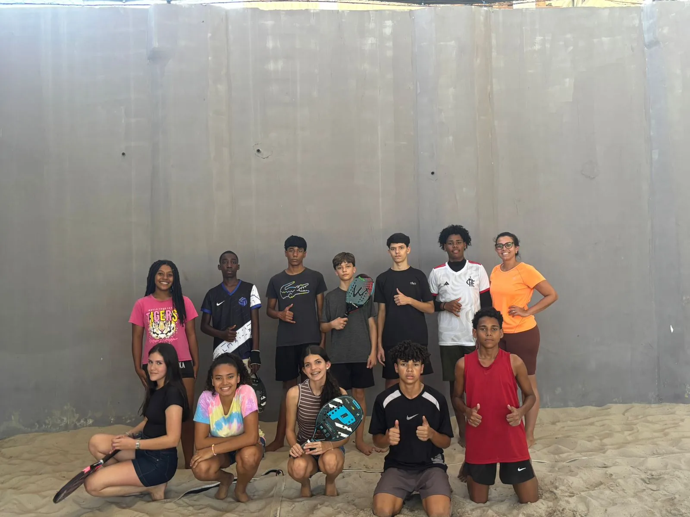
Beach tennis para estudantes de escolas públicas, com foco em coordenação, convivência e lazer ativo.
Consultar inscrições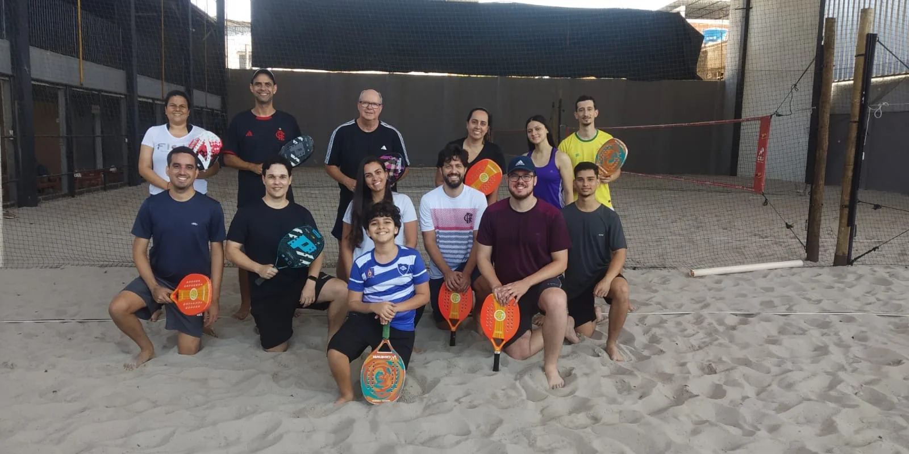
Beach tennis para servidores, promovendo bem-estar, integração, coordenação motora e lazer ativo.
Consultar inscrições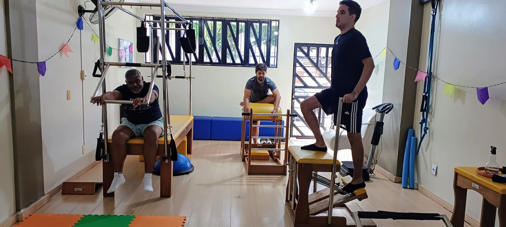
Pilates em aparelhos para desenvolver força, mobilidade, equilíbrio, consciência corporal e qualidade de vida.
Consultar inscrições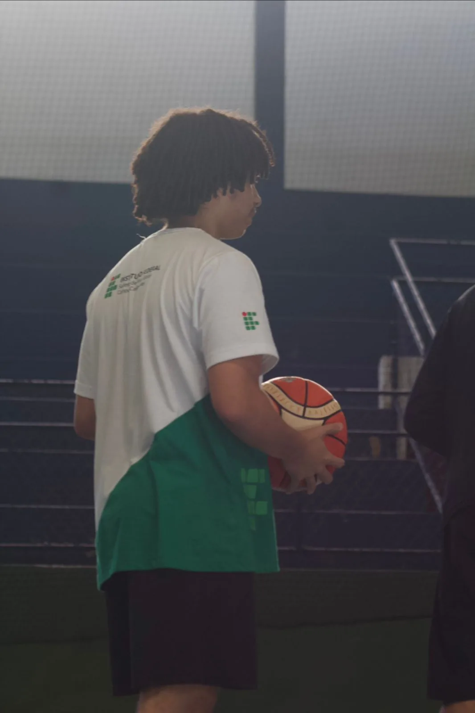
Vivências em modalidades coletivas para estimular cooperação, condicionamento, disciplina e convivência.
Consultar inscrições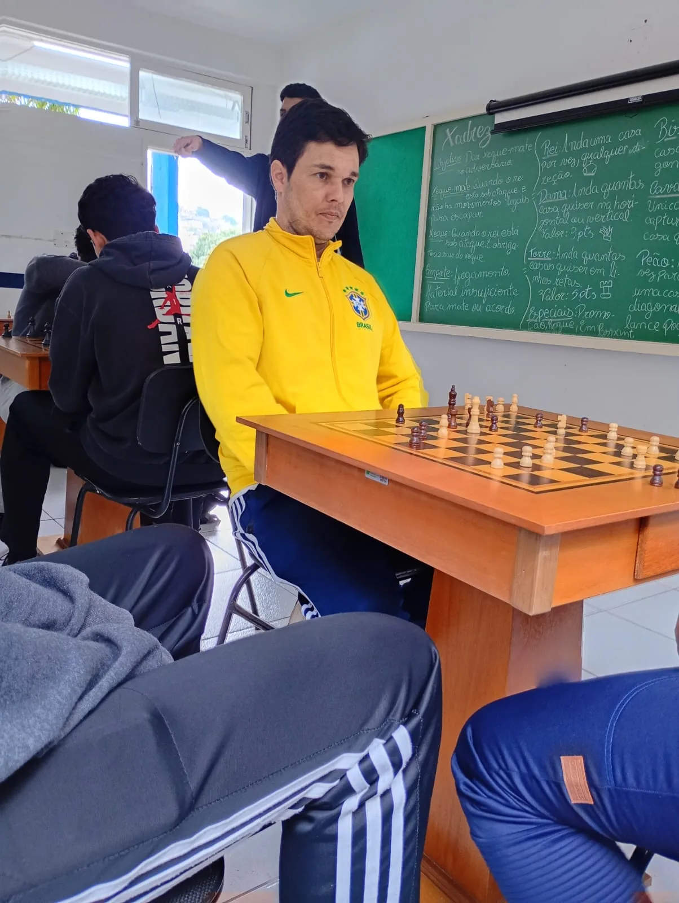
Xadrez como ferramenta para exercitar concentração, estratégia, tomada de decisão e socialização.
Consultar inscriçõesAções complementares
Formação, gestão e iniciativas que ampliam o alcance do Movimente-se.
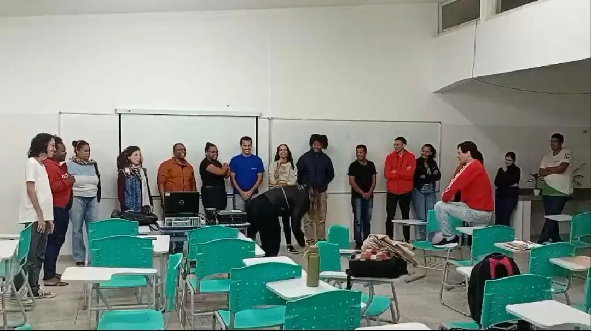
Avaliação do ambiente de trabalho, orientação postural, ginástica laboral e produção de boas práticas.
Pedir informações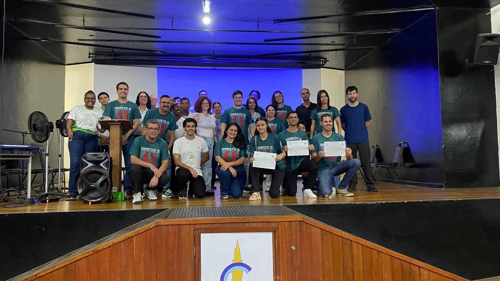
Formação prática de estudantes na gestão, comunicação, organização e avaliação das iniciativas do Movimente-se.
Pedir informações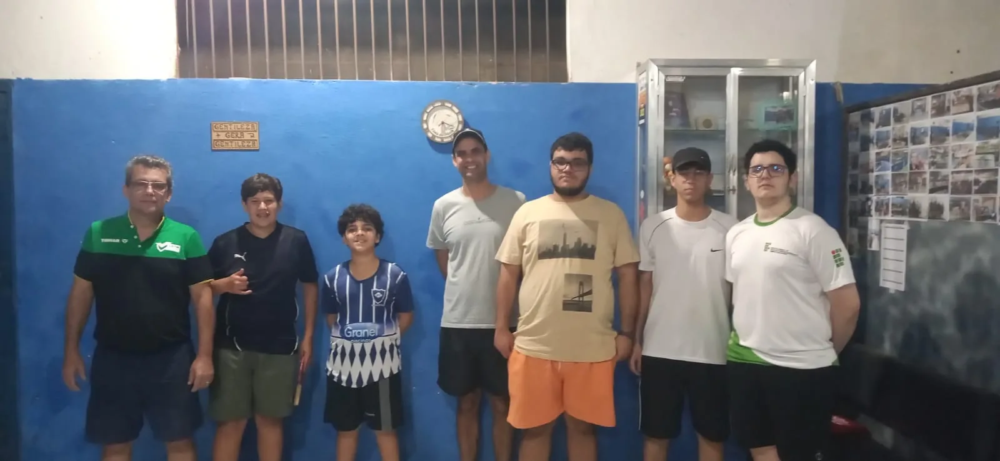
Tênis de mesa para desenvolver agilidade, concentração, coordenação, raciocínio, disciplina e integração.
Consultar inscriçõesAcompanhe os canais oficiais: novas turmas e oportunidades podem surgir ao longo do projeto.